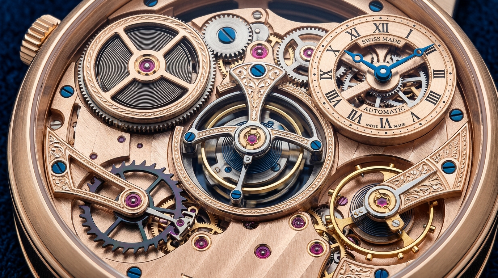

1. Mola Real da Corda
Responsável por armazenar e fornecer energia ao movimento.
2. Mostrador Numérico
A parte onde o horário é mostrado.
3. Gaiola do Turbilhão
Serve para anular os efeitos negativos da força da gravidade sobre a precisão do relógio mecânico.
4. Roda de Escape
Controla a liberação da energia do movimento e faz o ponteiro avançar de forma regular.
5. Ponte com Rubis
Servem para diminuir o atrito e o desgaste entre os eixos das engrenagens metálicas.